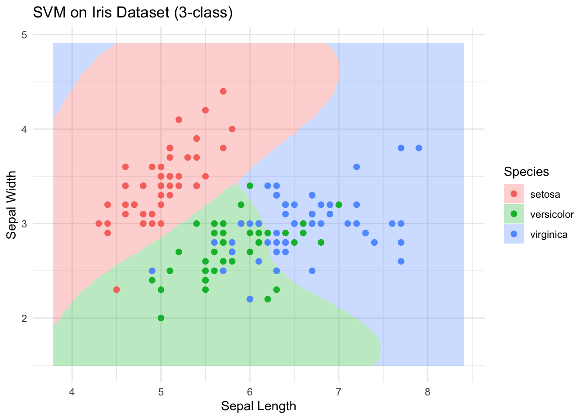
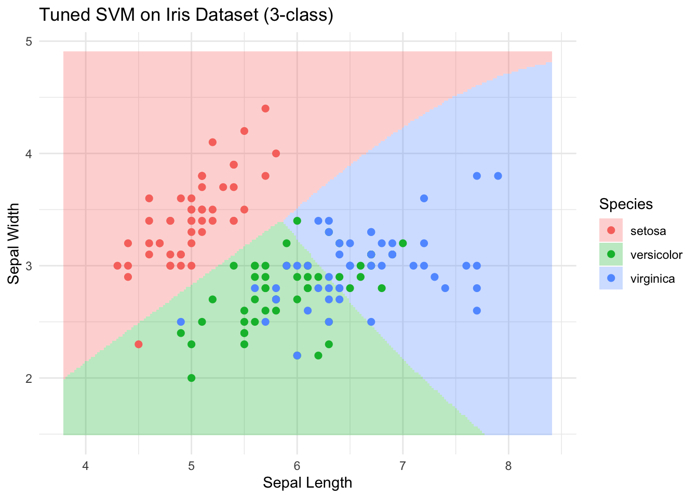

install.packages("tidyverse")
install.packages("MASS")
install.packages("klaR")
install.packages("devtools")
install.packages("psych")
install.packages("MVN")
install.packages("e1071")5 SVM在R中的实现
本章介绍R中的SVM
安装包
加载包
library(tidyverse)
library(psych)
library(biotools)
library(MVN)
library(e1071)1 SVM模型的建立
# 取两个变量做演示
iris_sub <- iris[, c("Sepal.Length", "Sepal.Width", "Species")]
# 建立 SVM 模型（径向基核函数 RBF）
svm_model <- svm(Species ~ ., data = iris_sub,
kernel = "radial",
cost = 1,
gamma = 0.5)2 SVM模型的可视化
# 生成网格点用于预测
xrange <- seq(min(iris_sub$Sepal.Length) - 0.5,
max(iris_sub$Sepal.Length) + 0.5,
by = 0.02)
yrange <- seq(min(iris_sub$Sepal.Width) - 0.5,
max(iris_sub$Sepal.Width) + 0.5,
by = 0.02)
grid <- expand.grid(Sepal.Length = xrange,
Sepal.Width = yrange)
# 对网格点分类预测
grid$Species <- predict(svm_model, grid)
# 画出分类区域和样本点
ggplot() +
geom_tile(data = grid,
aes(x = Sepal.Length,
y = Sepal.Width,
fill = Species),
alpha = 0.3) +
geom_point(data = iris_sub,
aes(x = Sepal.Length,
y = Sepal.Width,
color = Species),
size = 2) +
labs(title = "SVM on Iris Dataset (3-class)",
x = "Sepal Length",
y = "Sepal Width") +
theme_minimal()
3 计算预测准确率
pred <- predict(svm_model, iris_sub)
accuracy <- mean(pred == iris_sub$Species)
print(paste("Accuracy:", round(accuracy * 100, 2), "%"))[1] "Accuracy: 82 %"4 改进SVM模型
4.1 调整参数
svm_model_tuned <- svm(Species ~ .,
data = iris_sub,
kernel = "radial",
cost = 10,
gamma = 0.8)
pred_tuned <- predict(svm_model_tuned, iris_sub)
accuracy_tuned <- mean(pred_tuned == iris_sub$Species)
print(paste("Tuned Accuracy:", round(accuracy_tuned * 100, 2), "%"))[1] "Tuned Accuracy: 82 %"4.2 使用不同核函数（线性核）
svm_model_linear <- svm(Species ~ .,
data = iris_sub,
kernel = "linear",
cost = 10)
pred_linear <- predict(svm_model_linear,
iris_sub)
accuracy_linear <- mean(pred_linear == iris_sub$Species)
print(paste("Linear Kernel Accuracy:", round(accuracy_linear * 100, 2),
"%"))[1] "Linear Kernel Accuracy: 82 %"4.3 数据预处理（标准化）
iris_sub_scaled <- iris_sub
iris_sub_scaled[, 1:2] <- scale(iris_sub_scaled[, 1:2])
svm_model_scaled <- svm(Species ~ .,
data = iris_sub_scaled,
kernel = "radial",
cost = 1,
gamma = 0.5)
pred_scaled <- predict(svm_model_scaled, iris_sub_scaled)
accuracy_scaled <- mean(pred_scaled == iris_sub_scaled$Species)
print(paste("Scaled Data Accuracy:", round(accuracy_scaled * 100, 2),
"%"))[1] "Scaled Data Accuracy: 82 %"4.4 交叉验证选择最佳参数
tune_result <- tune(svm, Species ~ .,
data = iris_sub,
ranges = list(cost = 10^(-1:2),
gamma = c(0.1, 0.5, 1)))
best_model <- tune_result$best.model
pred_best <- predict(best_model, iris_sub)
accuracy_best <- mean(pred_best == iris_sub$Species)
print(paste("Best Model Accuracy:", round(accuracy_best * 100, 2),
"%"))[1] "Best Model Accuracy: 80 %"# 输出最佳参数
print(tune_result$best.parameters) cost gamma
5 0.1 0.5# 输出调参结果
print(tune_result)
Parameter tuning of 'svm':
- sampling method: 10-fold cross validation
- best parameters:
cost gamma
0.1 0.5
- best performance: 0.2133333 # 画出最佳模型的分类区域和样本点
grid$Species <- predict(best_model, grid)
ggplot() +
geom_tile(data = grid,
aes(x = Sepal.Length,
y = Sepal.Width,
fill = Species),
alpha = 0.3) +
geom_point(data = iris_sub,
aes(x = Sepal.Length,
y = Sepal.Width,
color = Species),
size = 2) +
labs(title = "Tuned SVM on Iris Dataset (3-class)",
x = "Sepal Length", y = "Sepal Width") +
theme_minimal()
4.5. 使用更多特征
# 前文仅用两个特征做可视化，实际可用全部特征
# 由于可视化限制，无法直接展示多维特征空间的分类边界，但可以通过准确率来评估模型性能
svm_model_full <- svm(Species ~ .,
data = iris,
kernel = "radial",
cost = 1,
gamma = 0.5)
pred_full <- predict(svm_model_full, iris)
accuracy_full <- mean(pred_full == iris$Species)
print(paste("Full Feature Set Accuracy:",
round(accuracy_full * 100, 2), "%"))[1] "Full Feature Set Accuracy: 97.33 %"